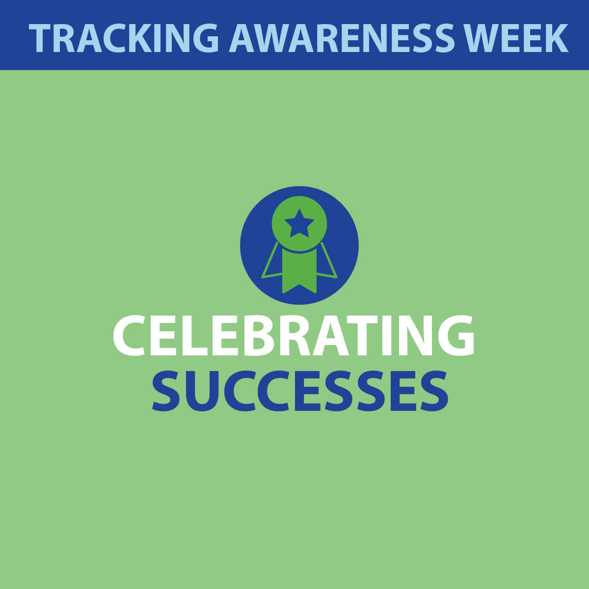
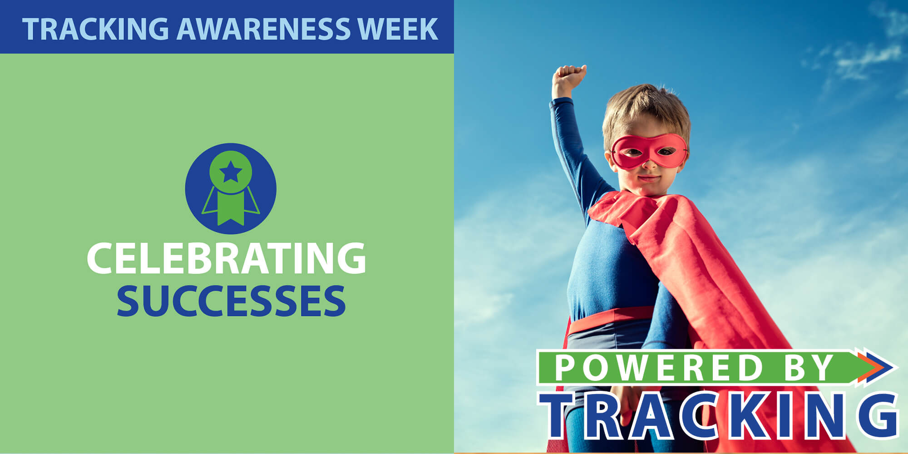

What do we consider success here at Tracking California? Below are three ways in which Tracking has been successful in leading the way and working with our partners to mobilize data to improve public health.
New projects, new partnerships:
In the last year, we've helped initiate over six new research projects. From new topics (drinking water after wildfires, COVID-19, hormones in beef) to new communities (Northern Sierras, Inland Empire, Central Coast) and new partners, collaborating on these projects allows Tracking to address both emerging and persistent public health issues throughout the state.
Sharing expertise to support community initiatives:
At Tracking California, we consider it a success when we are invited to share lessons learned from conducting air monitoring research projects (such as our Imperial Project) to support communities that are leading their own air monitoring efforts. During the past year, we have continued to provide technical assistance, trainings, and coordination to our community partners to assist in a range of air monitoring activities, including the development of a low-cost methane monitor and five trainings to inform how to develop or start a community air monitoring project.
Forging new paths that become mainstream:
Eight years ago, we developed the Water Boundary Tool as the first statewide initiative to collect digital boundaries of public water system service areas. After collecting data for 4,800 water systems, providing data to 6,200 users, and serving as a model for several other states, we retired our WBT on July 1, 2020. The data collection effort will now be conducted by the CA Waterboards. By demonstrating the need, feasibility, and utility of the WBT-- to the point that the government has now dedicated staff and resources to its replication-- Tracking California has made a lasting impact by strengthening public health infrastructure for the collection of essential data.